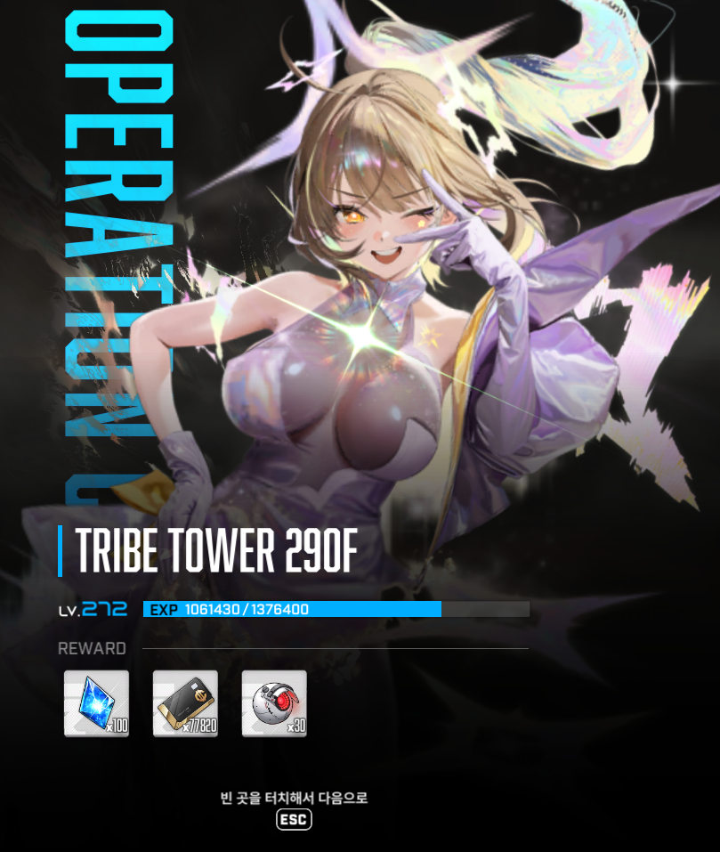
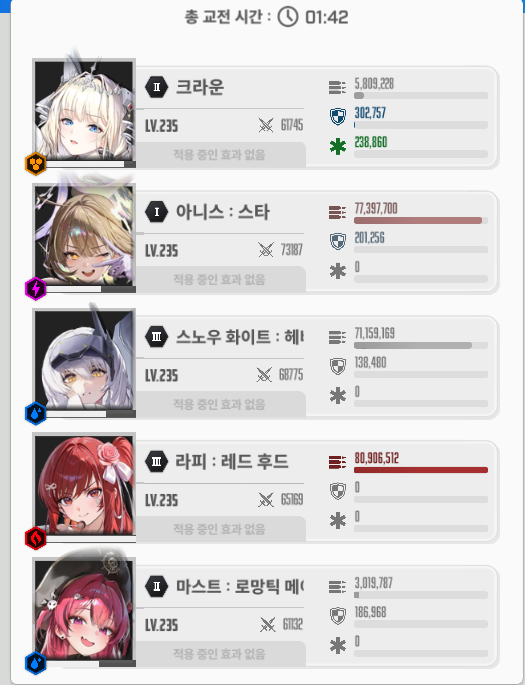

일단 이 공략 기준은 두 가지 가정에서 출발함
1. 첫 버스트에 코어가 안 부서진다
2. 첫 버스트에 크라운 쉴드를 보유한 상태에서 모더니아 레이져에 긁혔을때 엄폐물이 1이라도 남는다
STEP 1
모앵이가 첫 기관총 우두두 쏘는 거에 절대 크라운 쉴드가 아작나거나 엄폐가 아작나면 안됨 몸으로 맞아야함
첫 버스트는 크라운 라피 무조건 코어만 타격
두번째 버스트 타이밍이 잘 맞췄다는 가정하에 크라운 각설 턴인데 모앵이가 백스텝 후에 미사일 6개가 생성하기전에 써졌다면 잘한거임
사람마다 딜이 다르겠지만 특히 아니스 스타의 별똥별에 날개가 작살나는 경우가 빈번히 발생하기에 에임 알아서 잘 두고 스화 버스트 1타로 날개하나 제거
2타는 장전해뒀다가 모앵이가 기관총 우두두 하고나서 백스텝할때 제거 (흔히들 말하는 날개컨임)
세번째 버스트 타이밍 마스트 라피는 재생성되는 두 날개중 하나에 에임을 두고 라피 버스트 를 반드시 맞출 것 그리고 점사
STEP 2
여기서부터 좀 어려움
라피 버스트를 정상적으로 맞췄다는 가정하면 모앵이가 지금 날개 한쪽을 잃은 상태로 백스텝에서 다시 기관총 패턴하러 복귀하는 중일거임
우리는 지금 라피 버스트인 상태로 반드시 이번 백스텝때 모앵이 날개를 부숴야함 (날개컨을 해야함)
내가 쓴 방법은 스노우화이트 잡고 풀차지 한 상태로 대충 데미지 계산해서 쏘고 톡톡이해서 부쉈음 아무래도 스화 버스트가 아니라 좀 힘들긴함
STEP 3
여기까지 왔으면 다 했다 모앵이 날개 재생성 하는데 여기서 핵심은 크라운 스노우화이트 버스트 턴인데 날개를 "빈사 상태로 만든다"
어차피 여기서 날개컨해도 홍길동 패턴은 확정적으로 하러감 그렇기 때문에 빈사만 만들어놓고 홍길동 패턴때 모엥이 날개를 부순다는 마인드로 하면됨
이유 : 투력이 낮을경우 홍길동때 저 미사일조차 부수는게 너무 힘들거임 일단 난 그랬음
홍길동 패턴동안 정상적으로 버스트 사이클을 굴렸다면 첫 블링크(사라질때) 마스트 라피가 돌거임 그걸로 날개 부수면 됨
그리고나서 다음 버스트는 크라운 각설 바로바로 써줘야함 뒤에 이유 후술
STEP 4
홍길동 패턴이 끝난다면 모앵이 코어가 재생성됨 홍길동 패턴동안 크라운 각설을 사용한채로 맞이하게 될텐데
모앵이가 레이져 쏘기전에 버스트가 끝나고 다시 크라운 라피를 쓸 타이밍이 무조건 온다 처음에 했던 것처럼
크라운쉴드로 1타 쥐꼬리만큼 남은 엄폐물로 1타 씹어주고 생존해준다
끝났다 여기까지 왔으면 이미 모앵이 걸레짝일거다
글섭기준 지금 내가 클리어한 기록이 무기한 최저이기때문에 아마 다른 사람들은 더 수월하게 꺨 수 있을거라고 생각함
나처럼 흑련이 없거나 리버가 없는 사람들은 한 번 도전해보면 좋을 것 같음
다들 화이팅